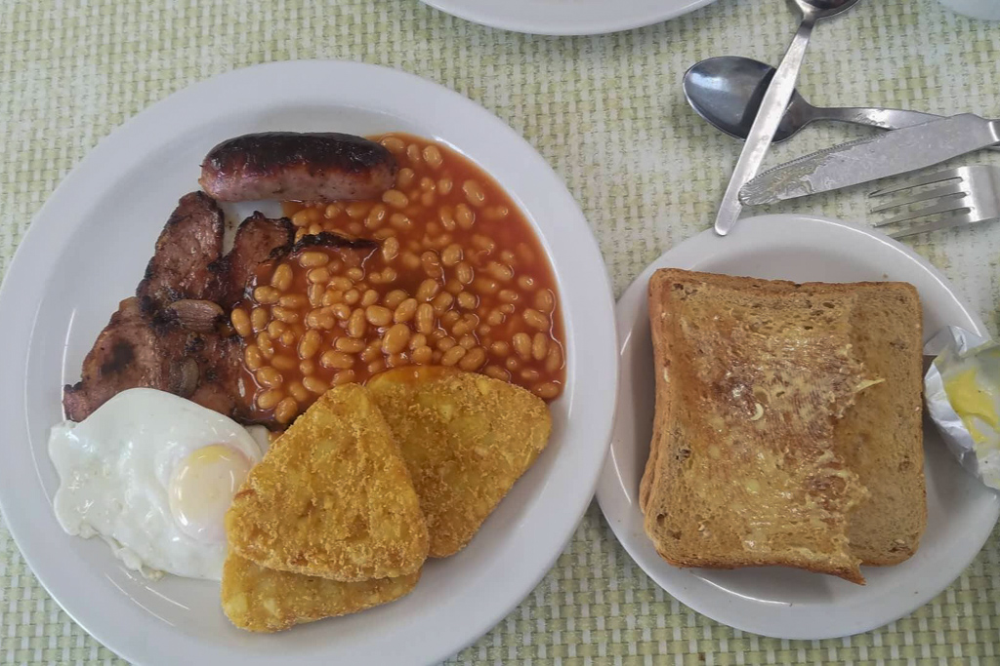
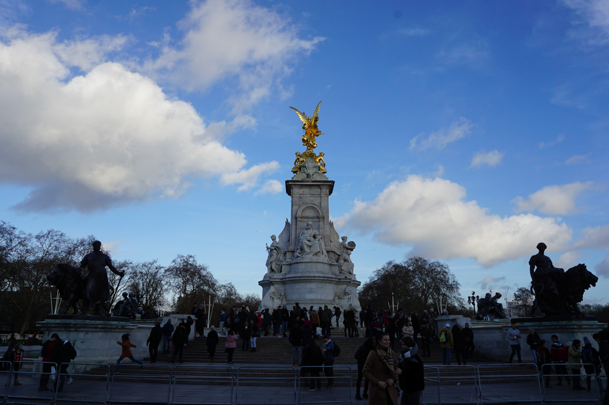
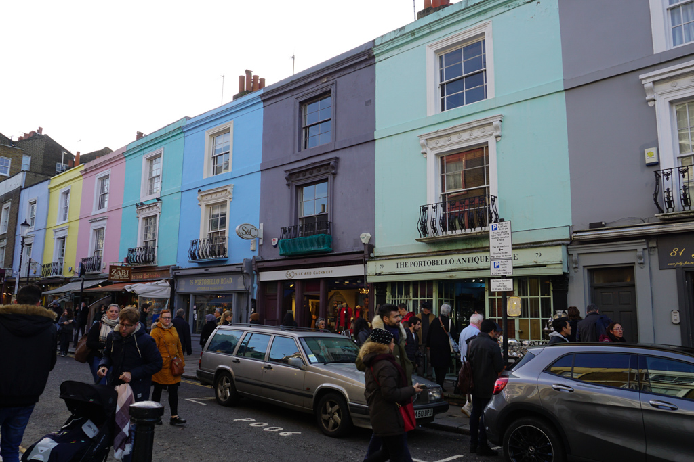
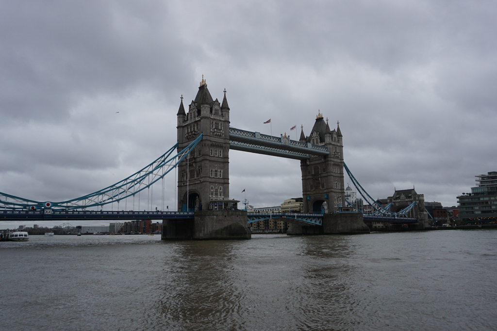
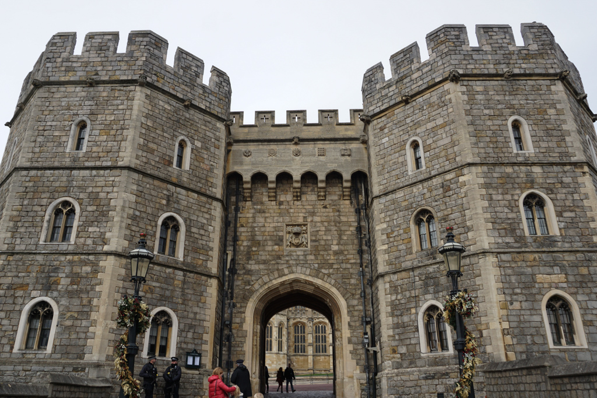
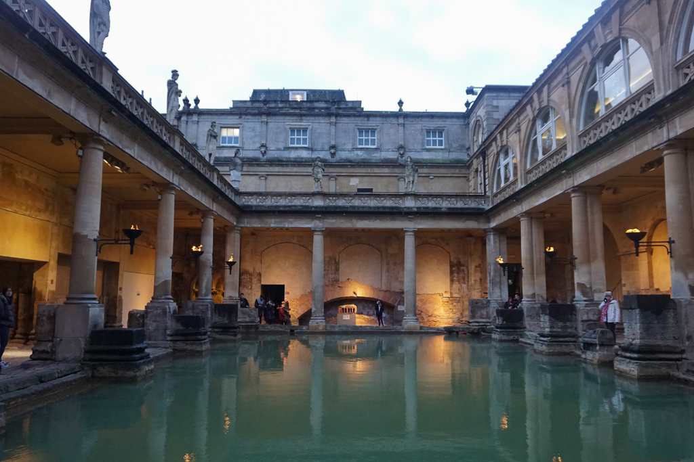
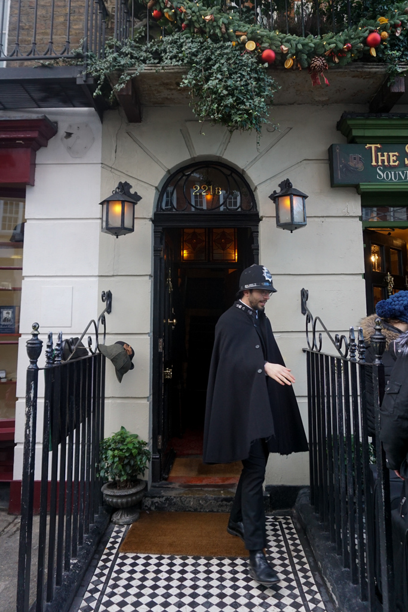
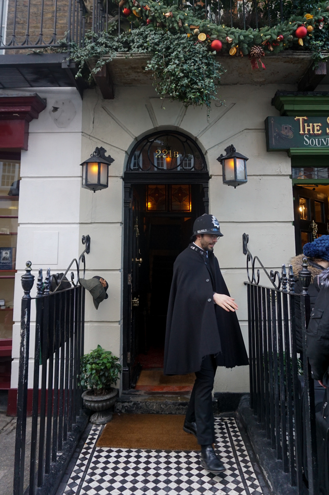

Exploring London
Nov 13 - Written by Bonnie
Ah yes, the great city of London, home of the queen’s thirty or so corgis and the most soothing and pleasing of English accents.
One of the few spots in Europe that speaks English natively, London is a beautiful place to travel to during a holiday or vacation. Not only is there so much to explore within the city itself, there's also so much to see just outside the city, great for a few one day trips. I stayed in London for about a week to explore the great museums in the city, enjoy delicious delicacies, and walk through a castle or two.
If you’re coming from Paris or another country that has the Eurostar, definitely hop on a train to enjoy one of the most enjoyable and relaxing rides in a lifetime--not only is it quick but also so easy and efficient to navigate. Once you reach London, definitely take the time to wind down at your hotel or resident before heading out to explore. Depending on what time of the year you visit, you may be greeted with London’s infamous weather, but don’t let that deter you from exploring the city!
Since London is such a large city, I’ve broken it down into a few different areas to check out each day for an easier time navigating the different popular sites to visit. Of course one of the few first items on the agenda is food!! -- more specifically a classic English breakfast. Starting off in the Westminster neighborhood, there's a great local British diner called the Regency cafe that serves up some yummy baked beans to fill up your tummy. Now, although the famous Big Ben is in this area, it's sadly been under construction and will be wrapping up in 2021 if you’re interested in waiting a little bit to check it out! However, there’s of course more to see, because only a short walk away from the cafe is the Westminster Abbey, the beautiful royal church filled with delicately crafted stained glass windows. If you’re a fan of art history and architecture, this spot will keep you mesmerized for hours!

Now, of course we have to visit the royal palace after seeing the royal church, ah the well known Buckingham Palace where the royal corgis sit. Although it's quite difficult to get a first hand look inside the palace, being able to see it from its golden gates is still quite a sight to marvel at, not to mention taking videos of the guards standing outside. Moving on to one of the spots that I think really shows what a huge city London is, Piccadilly Circus--one of my favorite places to just wander and check out all the different things that are happening along the streets; it definitely reminds me of New York’s Times Square. And to top off a wonderful first day, one of my favorite restaurants, Poppies Fish and Chips -- I’m sure you know what to order there!
Next up on our agenda is a museum filled day, and to start off the morning before looking at some incredible art at the Victoria and Albert museum is a very aesthetically beautiful cafe, EL&N cafe, which serves up a mean acai bowl. Other than an art museum, there's also a very special museum that I’m sure a lot of TV goers enjoy, Sherlock Holmes’s 221b Baker Street. There, you get to explore the famous home of the genius detective while also getting a close look at some of the popular items that have become global icons for the show. To top off the plentiful art day is a stroll through Covent Garden where you can hear great busking shows and magic performances that will keep you there all night long.
And of course a vacation is nothing without a shopping trip right? Europe is full of so much history and antiques, and if you’re interested in vintage items then Nottinghill is the place for you. Needless to say you gotta watch the Nottinghill movie before heading on the train to the Portobello Market to see the colorful row of houses in real life. Since Portobello Market includes the stalls on the street and small plazas within stores, there's just so much to see that a day may not be enough! After all that shopping, it's time to wind down with one of the must-see sites in London, the British Museum. Housed with some of the more renowned relics in the whole world, you could be lost in this museum for days just looking at all the different items--which is why we cleared up the rest of your day just to get your time’s worth wandering the museum.
Last but not least, the crown jewel of the city--quite literally so. The Tower of London is the home to the crown jewels of the royal family and also a killer view of River Thames--plus its the second palace that you’ve been to on this trip! This spot is another space filled with all different relics specific to the royal family, and a very interesting collection of knight armor that may take you by surprise. Most of all, I’m sure your jaw will drop as mine did when you get the chance to see the sparkling jewels and crowns that you get to see with your own eyes. To wrap up a great exploration of London, take a moment to sing-- London bridge is falling down, falling down… Except it's not London bridge! Its Tower Bridge that you’ll see here and have the chance to climb up to to get a full view of the city you’ve just explored.
Day Trips Outside London
Although there’s a lot to see in the city, it’s sometimes always great to get out of the hustle bustle and get some fresh air. Now, if you’re also a fan of Megan Markle and Prince Harry like I am, then Windsor is the perfect place for you! Just on the outskirts of the city and a quick train ride away is Windsor Castle. Here you will have the opportunity to see your third castle and even walk through the rooms to get a real feel for what life was like as a royal. Most of all, you can get a first look at Megan Markle's beautiful wedding gown and other wedding details that were created for the big event. Not to mention Windsor is a perfect opportunity to experience what life is like outside of the big city and you get the chance to go on a leisurely stroll through a beautiful castle.
Another great place to travel to for the day is Bath, home to the very infamous Roman Baths and author Jane Austen. A little longer train ride away than Windsor, but a very rewarding trip for the opportunity to look at the beautiful landscape and architecture that has accumulated through the decades to produce a marvelous town. For any avid novel reader, this would be a great place to learn about the life of Jane Austen and how she became the renowned novelist she is today. Another fascinating site in Bath is the Roman Bath houses that lie in the center of the town. As the name describes, these bath houses were created many years ago by the Romans where a wondrous thing happens; all the water in the bath houses are naturally heated!-- meaning that all the steam and clear water you see is naturally generated from the ground. You wouldn’t believe it till you see it! Here you can explore exactly how the Romans traveled to the United Kingdom and you get a first hand try at some of the water that runs through the Earth--definitely give it a taste, the tour guide mentioned its extremely healthy water! To wrap up the day, you can also take a look at Bath Abbey to see some beautiful architecture before making your way back to your residence to enjoy a little bit more of the vibrant city of London before wrapping up your trip.
 
